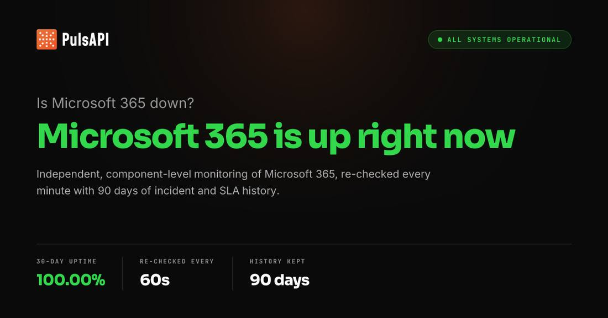

Microsoft 365 Consumer Incident Remediated as Email Backlog Clears; Business Outage Still Open
Update to flashes 331 through 354 and 359: Microsoft's consumer Microsoft 365 incident is remediated. The public status page's final status, confirmed against two independent mirrors of the official page at about 04:23 UTC and 04:34 UTC on November 14, 2026, says the services across the previously affected environments have fully recovered and the backlog of email messages has been processed; the consumer incident ran from 10:05 UTC on November 12 to 16:10 UTC on November 13. Microsoft's @MSFT365Status account posted that services including Outlook have fully recovered and stabilized. The business incident MO1550821 is still open as service degradation: its next update was due by 02:30 UTC on November 14 and had not landed by 04:34 UTC, and the 22:00 UTC update covered in flash 354 remains the latest business update. No post-incident report has been published.

- 01THE REMEDIATION — Microsoft's consumer Microsoft 365 incident is remediated. The public status page's final status, confirmed against two independent mirrors of the official page at about 04:23 UTC and 04:34 UTC on November 14, 2026, says the services across the previously affected environments have fully recovered and the backlog of email messages has been processed. The consumer incident ran from 10:05 UTC on November 12 to 16:10 UTC on November 13. Microsoft's @MSFT365Status account posted that services including Outlook have fully recovered and stabilized.
- 02THE SPLIT — The business incident MO1550821 is still open as service degradation. Its current status is unchanged from the 22:00 UTC update: sustained service recovery, extended monitoring, and the email backlog watched until every message processes successfully. Its next update was due by 02:30 UTC on November 14 and had not landed by 04:34 UTC. The 22:00 UTC update had made the fully drained mail backlog the explicit condition for closure; the consumer side now meets that bar and the business side does not yet.
- 03THE WATCHPOINT — Next business update, due by 02:30 UTC on November 14 and already overdue: whether it mirrors the consumer closure, whether the business email backlog is reported fully drained, or whether it repeats the same watching brief; the post-incident report with a confirmed root cause. Copilot and the OpenAI and Anthropic Microsoft 365 connectors remain affected on the business side. The status page still lists the business incident as service degradation.
WHAT HAPPENEDWhat Happened
Microsoft's consumer Microsoft 365 incident is over. The public service-health status page now carries a final status for the consumer incident: the services across the previously affected environments have fully recovered and the backlog of email messages has been processed, and the issue is remediated. The page lists the consumer incident as running from 10:05 UTC on Thursday, November 12, to 16:10 UTC on Friday, November 13, 2026. Two independent mirrors of the official page, checked at about 04:23 UTC and 04:34 UTC on November 14, show the same final status, and Microsoft's @MSFT365Status account posted that services including Outlook have fully recovered and stabilized.
The closure is only half the story. The business incident, MO1550821, was still listed as service degradation at 04:34 UTC on November 14, with its current status unchanged from the 22:00 UTC update: Microsoft continues to observe sustained service recovery across the previously affected environments, is monitoring for an extended period because of the severity of the impact, and is monitoring the email backlog to ensure all messages process successfully before considering the issue resolved. Its next update was due by 02:30 UTC on November 14 and had not landed by 04:34 UTC, more than two hours late. The 22:00 UTC update, covered in flash 354, had made the fully drained mail backlog the explicit condition for closure; the consumer side now meets that bar and the business side does not yet.
The split ending fits how this outage has behaved all along: recovery in stages, by region and by service, with the mailbox layer last. The 17:57 UTC update on November 13 named the cause as an issue introduced during an earlier network capacity upgrade that surfaced following a recent network change, and Microsoft has said the incident was a technical issue not related to cyberattacks or AI agents. The consumer remediation closes the incident for Outlook.com and personal accounts; businesses still wait on the same mailbox layer, and with it Copilot and the OpenAI and Anthropic Microsoft 365 connectors that depend on Exchange Online.
WHY IT MATTERSThe backlog bar is met, on one side of the incident
The consumer remediation is the first time Microsoft has applied its own closure test and passed it. The 22:00 UTC update turned the email backlog into a pass-fail condition, saying the incident would not be considered resolved until every queued message had processed successfully. The consumer final status repeats that language back almost verbatim: the backlog has been processed, therefore the issue is remediated. That makes the consumer closure a real milestone rather than a reworded recovery update, and it sets the exact test the business incident still has to pass.
For the AI stack the exposure is still open where it counts. Copilot Chat and the OpenAI and Anthropic Microsoft 365 connectors sit on the business side of the incident, and the open business update still lists Copilot, Teams calendars, SharePoint, Defender, Purview, Planner, To Do, Intune and Power BI among the affected scenarios. Personal Outlook is back; the workplace AI layer that reads email, calendar and files is still waiting on the same mailbox recovery as every business customer.
WHAT TO WATCHThe overdue 02:30 UTC business update, then the post-incident report
The next fact is the business update that was due by 02:30 UTC on November 14 and had not appeared by 04:34 UTC: whether it mirrors the consumer closure and declares the business incident remediated, whether it reports the business email backlog fully drained, and whether it gives a time for full restoration or repeats the same watching brief. A further slip would say the business backlog is draining more slowly than the consumer one.
The post-incident report will carry the lasting answers: which network capacity upgrade introduced the issue, what the recent network change was that surfaced it, why restored servers froze again under traffic at 00:00 and 04:22 UTC on November 13, and what the traffic influx was. Until it lands, the capacity-upgrade explanation is Microsoft's own account, not an independently verified root cause. The earlier Power Platform incident PP1550869 was declared restored at 15:50 UTC on November 13 with a post-incident report promised within five days.
SIGNAL JUDGMENT — ANALYSISHalf the outage is over; the half that runs businesses is not
Tokenta Signal's judgment: The consumer remediation is real, and it is also the measure of what is left. Microsoft set the backlog as the definition of done at 22:00 UTC, and the consumer side has now passed that test while the business side has not, with its next update already two hours overdue. Treat personal Outlook as restored and workplace Microsoft 365, with Copilot and the AI connectors riding on it, as still open until the business update says the same words the consumer one just did.
WHAT REMAINS UNCERTAINWhat Remains Uncertain
EVIDENCEEvidence
Microsoft's public service health status page, read through two independent mirrors of the official page at about 04:23 UTC and 04:34 UTC on November 14, 2026. The consumer incident carries a final status: the services across the previously affected environments have fully recovered and the backlog of email messages has been processed, thus this issue is remediated, with a start time of Thursday, November 12, 2026, at 10:05 AM UTC and an end time of Friday, November 13, 2026, at 4:10 PM UTC. The business incident is still listed as service degradation, with a current status of sustained service recovery and extended monitoring, and its next update due by 02:30 UTC on November 14 had not yet been posted at 04:34 UTC. Microsoft's @MSFT365Status account posted that services including Outlook have fully recovered and stabilized, while noting restoration continues for remaining customers and regions.
PRIMARY SOURCESPrimary Sources
- Microsoft Service Health: Microsoft 365 outage status
https://status.cloud.microsoft - PulsAPI: Microsoft 365 status
https://www.pulsapi.com/services/microsoft-365 - KuCoin News: Microsoft reports Outlook and other services stabilizing after outage
https://www.kucoin.com/news/flash/microsoft-reports-outlook-and-other-services-stabilizing-after-outage - MacRumors: Microsoft 365 outage resolving
https://www.macrumors.com/2026/11/13/microsoft-365-outage-resolving/ - Azure Blog: Microsoft 365 outage 12 November 2026
https://azureblog.co.uk/posts/microsoft-365-outage-12-november-2026/
RELATEDRelated Intelligence
- Microsoft 365 Outage Fully Closed as Business and Exchange Incidents Marked Service Restored
- FAA Lifts Nationwide Ground Stop After Four Hours; Officials Blame Aging Equipment, Rule Out Cyberattack
- FAA Grounds All U.S. Departures in First Nationwide Stop Since 2023; New AI Routing Tool Faces Scrutiny
- Starship Flight 15: All 26 Starlink V3 Satellites Deployed; Booster 22 Broke Apart After Divert